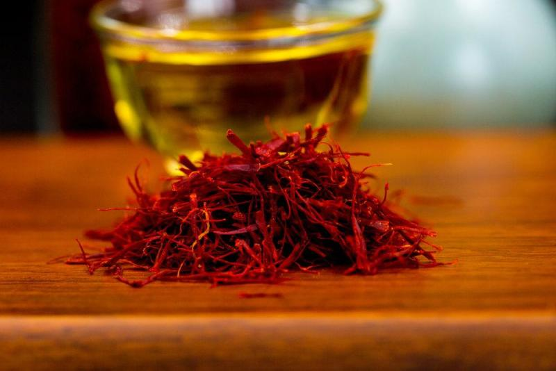

藏红花
起源:最早在公元前几千年，就在波斯地区的壁画上见过saffron 的图案，因为这种神奇的花朵，即妖娆妩媚，又具有神奇的功效，据说埃及艳后喜欢用藏红花水沐浴以保美丽容颜不老。

功效:藏红花具有活血化瘀、通络、凉血解毒、消炎止痛等作用，提高人体免疫力，具有排毒养颜、促进睡眠、提高精力之功效，
尤其是对女性养血活血具有良好的效果。据传，武则天也常把藏红花当茶饮用，达到美肤养颜的效果。另外，因为藏红花可减低胆固醇，
促进脂肪代谢，所以，经常服用藏红花还能够起到减肥瘦身的效果。
市场:藏红花是一种极为名贵的药材安国药材市场的伊朗西红花货源来货量少，加之目前国外海关关闭，持货者惜售，喊价高于前期。近期，安国药材市场的西红花价格，长丝西红花多喊价在每公斤7500-8500元之间，短丝西红花喊价在每公斤5500-6800元之间